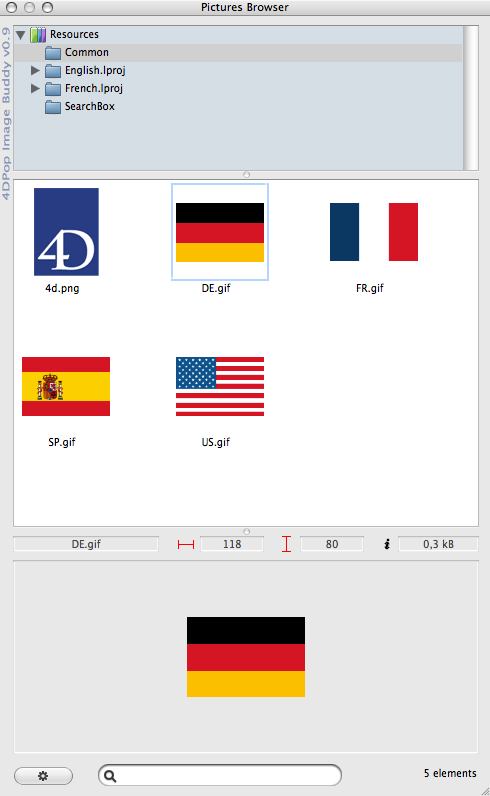

|
|
||||
4DPop Image Buddy は "Resources" フォルダやそのサブフォルダに格納された画像を管理するためのツールです。
インストール
| 1. | データベースのストラクチャファイル (".4db") と同階層に"Components" を作成します。 |
| 2. | "4DPop Image Buddy.4dbase"* フォルダまたはそのエイリアスを "Components" フォルダに置きます。 |
| 3. | データベースを開きます。 |
| 4. | "4DPop"コンポーネントを使用している場合、新しいボタン"Image Buddy" がツールバーに表示され、クリックすればエディタが表示されます。
"4DPop" コンポーネントがインストールされていない場合、ツールを開くためには "実行" メニューの "メソッド..." を選択し、"Pictures_Browser" を選択して "実行"ボタンをクリックします。 |

*Macintoshでは、コンポーネントは拡張子が ".4dbase" のコンポーネントです。

エディタウィンドウ
エディタには4つのエリアがあります:
1. フォルダリスト
このエリアにはデータベースの "Resources" フォルダの階層構造が表示されます。このリストは起動時に作成され、コンテキストメニューもしくはドラッグ＆ドロップで変更できます。
 |
|
デスクトップやフォルダからピクチャをドラッグすると、ピクチャが格納先フォルダにコピーされます。
4Dフォームや4Dのピクチャライブラリからフォルダにスタティックピクチャをドロップすると、名前を入力した後、ピクチャはPNGフォーマットで格納先フォルダに追加されます。
2. ピクチャリスト
ピクチャリストには選択したフォルダ内のピクチャのアイコンが表示されます。Shift + クリックで複数のピクチャを選択できます。またCommand/Ctrl + クリックで非連続のピクチャを選択できます。上下左右の矢印キーを使用してピクチャの選択を変更することもできます。選択に応じてコンテキストメニューが表示されます。
|
ピクチャを4Dフォームにドロップできます。ピクチャは4Dピクチャライブラリに作成され、 "Resources"フォルダのピクチャにリンクされます。
また同じリストから、アプリケーションアイコンやDockやツールバーにドラッグして、そのソフトでピクチャを開くこともできます。
3. 情報とプレビューゾーン
このエリアには選択したピクチャのプレビュー、幅と高さ、そしてサイズが表示されます。
またピクチャをこのエリアからフォームエディタや他のソフトウェア、デスクトップにドロップできます。
4. フッタ
このエリアにはユーティリティメニューを表示するアクションボタン、名前を入力して格納されたピクチャをフィルタするためのエリア、選択されたフォルダ内のピクチャの数を表示するエリアがまとめられています。
ユーティリティ

これらのユーティリティはPICTやcicnリソース、またはピクチャライブラリからピクチャを読み込み、PNGフォーマットに変換し、選択したフォルダ (またはフォルダが選択されていなければ "Resources" フォルダ) に格納します。
注 :
- エディタを開かなくとも、"Resources" フォルダのルート にピクチャを格納できます。これを行うには、ピクチャを4DPopパレットのImage Buddyアイコンにドロップします。
- Shiftキーを押したままフォルダを選択するか"再読み込み" を選択すると、ピクチャリストは選択したフォルダとそのサブフォルダのピクチャで再構築されます。
- データベースを変換する際、4DフォームからスタティックピクチャをドラッグしてResourcesフォルダにピクチャを作成し、フォーム上のオリジナルを削除、そして新しく作成したピクチャを4Dフォームにドロップすれば、新しいピクチャ参照を利用することができます。
-
より多くのピクチャを表示させるには、すぴりったを移動してフォルダリストをリサイズします。フォルダリストが小さくなると、階層ポップアップメニューに変わります。

この場合、フォルダの選択はポップアップメニューで行います。この設定では、 "Resources" フォルダにピクチャをドロップできません。これを可能にするには、スプリッタを使用してフォルダリストを拡げます。
- 同様に、プレビューエリアもスプリッタを使用して非表示にできます。
- ウィンドウとスプリッタの位置はファイル "~/Preferences/4D/4dPop v11 preference.xml" に記録されます。
- 'PICT' リソースの読み込み中、対応する'MASK' リソースが存在すれば (2004のドキュメント参照) 、それらは結果の 'png' ピクチャに統合され、アルファレイヤと透過が作成されます。
クライアント/サーバ
リモートモードでは、フォルダに対するいくつかの処理が無効になります (削除、名称変更、複製) が、ピクチャの追加、削除、更新はサーバに転送され、"Resources" フォルダを更新し、クライアントに通知します。
リリースノート
version 1.2 :
- クライアント/サーバのサポート
- ウィンドウとスプリッタの位置を記憶
- 4DPopパレットのImage Buddyボタン上へのピクチャのドロップを追加
- バグの修正
ソースコード
このコンポーネントはコンパイル版で提供されますが、コンポーネントフォルダ内の"Sources" フォルダにはソースコードが含まれています。
Forum
4DPopに関するディスカッションは Forum 4DPop で提供されています。